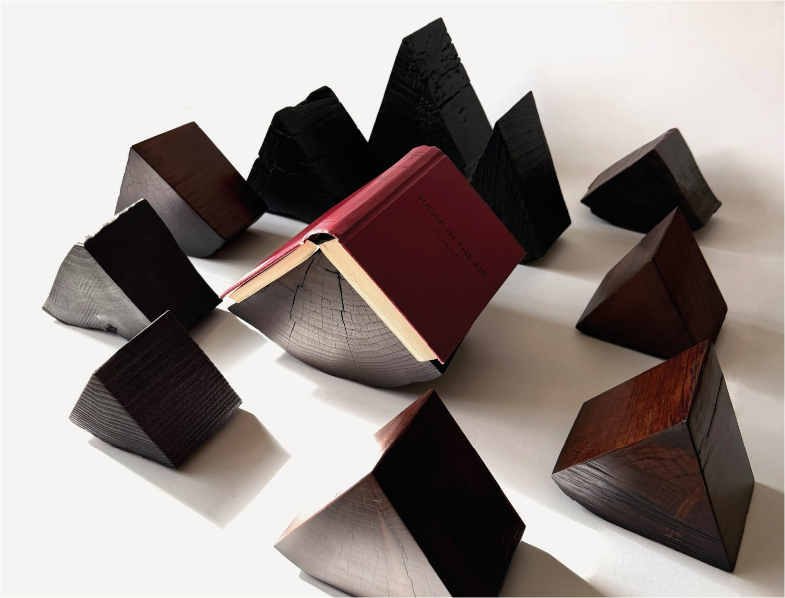

Look far enough into a tree’s rings and you start to feel how many layers of time are folded in there — more than anyone could count. I wanted that time near me.
In English, the word ‘book’ goes back to the beech tree. Book and tree, one root: I like to set them side by side. Every one comes out different in grain and shape, so each becomes a place of its own — a stand for a bookmark, somewhere one moment of a book can rest.

Details
From 20 × 18 × 18 cm, following the wood. Cherry, black locust, chestnut and others. Urushi lacquer.
As each piece is carved by hand, dimensions may vary. Slight differences in colour and form are the character of each individual wood.